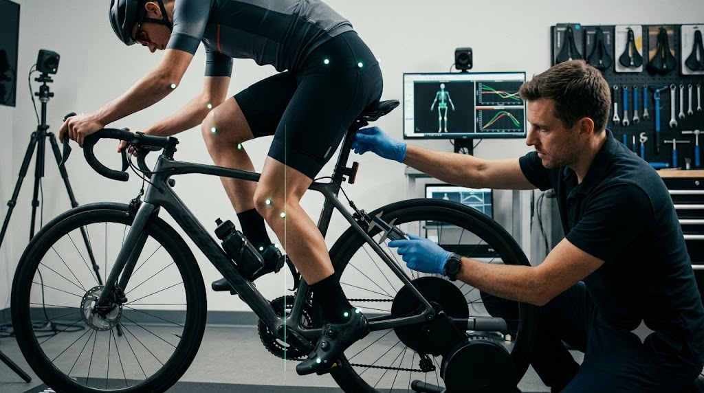

BIOMECHANICS
Preventing Anterior Knee Pain: A Guide to Saddle Height & KOPS
Why patellofemoral compressive force spikes with low saddles, and how millimeter adjustments eliminate knee strain.
By Dr. Elena Rostova
7 min read